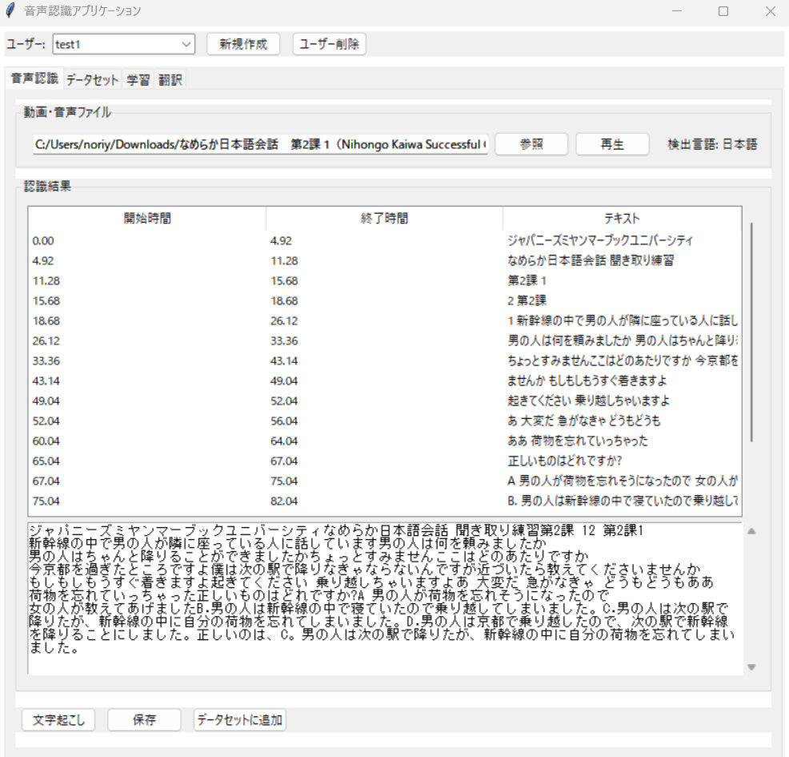
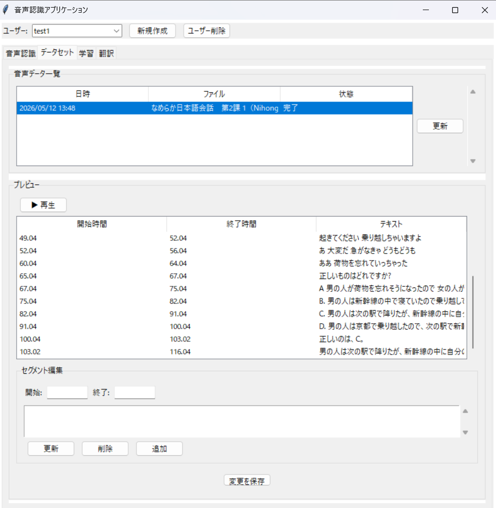
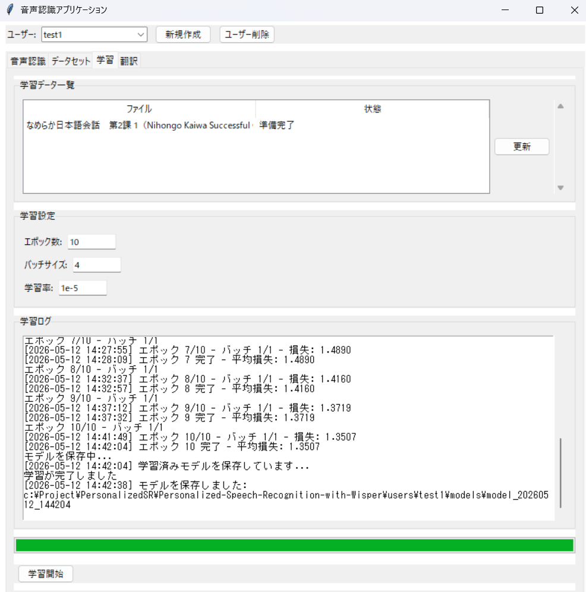
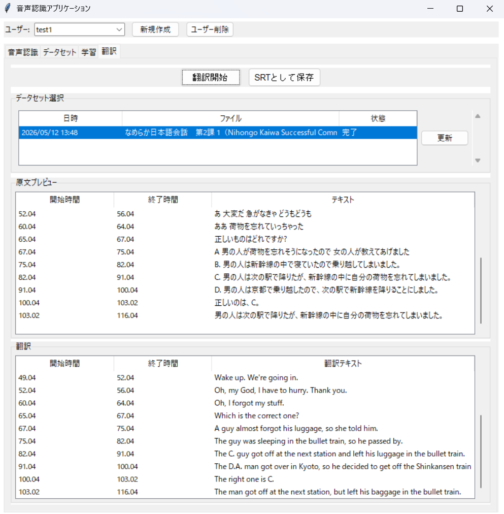
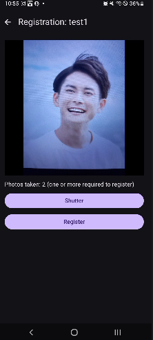
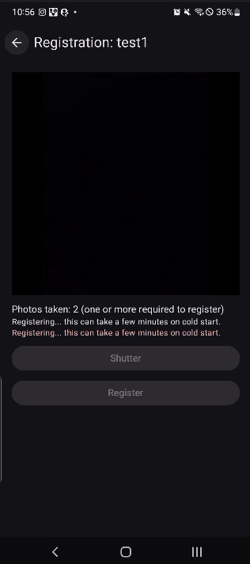

Computer science background; work spans enterprise IT support, automation, and software focused on speech, NLP, and pragmatic AI systems.
A Windows-first desktop tool chain built around OpenAI Whisper for offline transcription of audio and video. Video is normalized through FFmpeg to 16 kHz mono WAV; the leading segment drives Japanese vs English detection before a full pass. Results land in editable segment lists with export to SubRip (.srt) and JSON, plus optional paths for dataset review, experimental fine-tuning, and draft machine translation for subtitle workflows.




_MEIPASS, repo root, then PATH) so packaged and dev runs behave the same.users/<name>/ isolate transcripts, media, and checkpoints without mixing profiles on disk.To shorten the time spent creating translated subtitles during video editing, and to produce subtitle data aligned with the audio for future speech-recognition model training.
A local-first HTTP API for multilingual news-style summarization in Japanese, English, Spanish, and Chinese.
Clients choose between a low-latency extractive TF-IDF path and an abstractive mT5 checkpoint (csebuetnlp/mT5_multilingual_XLSum), with automatic dispatch, graceful fallback when mT5 output is invalid, and rich metadata (engine_used, fallback_used, timing, compression).
A batch endpoint summarizes many documents in one round-trip; optional hooks collect (article, summary) pairs for later fine-tuning.
POST /api/summarize
{
"text": "The Federal Reserve signaled...",
"summary_type": "brief",
"engine": "auto"
}
→ 200
{
"success": true,
"summary": "…",
"detected_language": "en",
"engine_used": "tfidf",
"fallback_used": false,
"compression_ratio": 0.07,
"processing_ms": 42
}
langdetect) so JA / EN / ES / ZH stay disambiguated without a heavy dependency stack.MT5_MODEL_NAME at the new checkpoint.To support an integrated news-style site by surfacing headlines and short summaries instantly from full articles.
An end-to-end sample pairing a Kotlin / Jetpack Compose client with Node.js Azure Functions. The app uses CameraX and ML Kit heuristics to capture snapshots, sends base64 JPEGs over HTTPS for embedding-based face matching against templates in Azure Table Storage, and can raise email alerts via Azure Communication Services with optional image attachments. Settings such as the function base URL live in DataStore; the README explicitly calls out that embedding a host key in the app is a demo anti-pattern for production.


To improve security for a room at home, and to gain hands-on experience building an image-processing and face-recognition style application end to end.